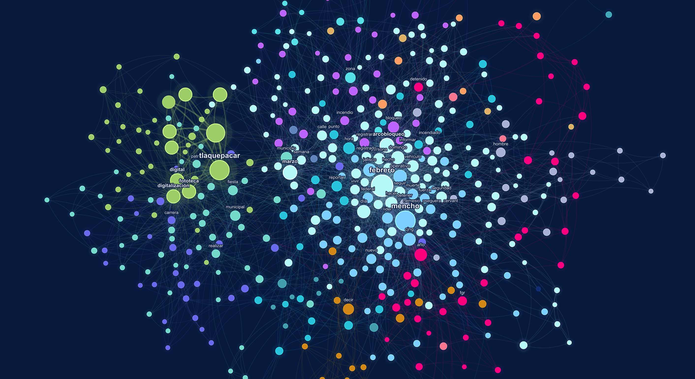
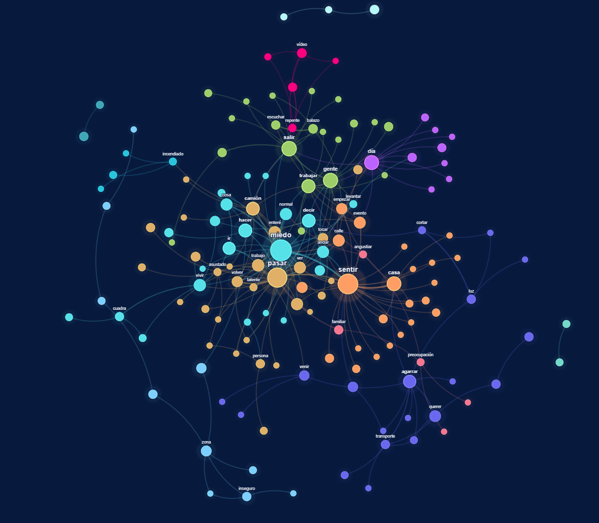

Como hemos observado hasta ahora, aunque las cifras oficiales reflejan una parte del panorama de los sucesos ocurridos el #22F, estas omiten las dimensiones subjetivas de la violencia y el impacto de este evento en la población.
Para nuestro proyecto, es esencial reconocer las percepciones y narrativas ciudadanas que muchas veces permanecen invisibilizadas dentro de los discursos institucionales. Por ello, se elaboraron una serie de entrevistas a trabajadores en establecimientos a 1km alrededor del ITESO, y se representaron en cartografías, redes y visualizaciones.
Twitter (Webscrapping)
El webscrapping se llevó a cabo por medio de búsquedas de hasthags relevantes (#Narcobloqueos, #Jalisco, #Mencho), que nos permitió recopilar tweets del #22F en la plataforma de Twitter. A partir de los textos descargados, se construyeron redes para analizar la frecuencia y relación entre las palabras de las conversaciones digitales de Twitter.

Esta red evidencia cómo el acontecimiento del #22F en la ZMG generó múltiples marcos interpretativos dentro de las conversaciones digitales. Los nodos centrales concentran los términos con mayor recurrencia e interconexión, mientras que los clústeres de colores muestran comunidades temáticas que representan distintas narrativas sociales: violencia, narcocultura, reacción mediática y opinión pública. La estructura conectada de la red indica un fenómeno altamente mediatizado y socialmente debatido.
Al centro de la conversación, podemos hallar los actores principales, como el Mencho, el CGNJ y las fuerzas estatales. Alrededor de estos actores, se contextualiza el abatimiento del Mencho y sus implicaciones: narcobloqueos, reportes, vehículos, operativo y seguridad. Este clúster informa de lo sucedido. Los demás clústeres detallan críticas ciudadanas y mensajes de figuras políticas, que hacen un llamado a la calma o celebran el operativo, como se explicó en la sección de Narrativa Oficial.

Asimismo, visualizamos los actores involucrados en la conversación de Twitter. La gráfica muestra que los usuarios más etiquetados fueron actores políticos, como Claudia Sheinbaum, Omar García Harfuch, Pablo Lemus y la Fiscalía General de la República; quienes se felicitaban entre sí mientras algunos ciudadanos los criticaban. También, se etiquetan a noticieros y a Grok, la inteligencia artificial de Twitter, para consultar información del suceso.
Entrevistas
Días posteriores a los acontecimientos del #22F, se realizaron algunas entrevistas a trabajadores comerciales de distintos establecimientos a los alrededores del ITESO. A partir de estas entrevistas, se identificó que gran parte del miedo experimentado por la población no provino necesariamente de una vivencia directa con la violencia, sino de la exposición constante a noticias y redes sociales, sumado a la intertidumbre del evento.
La rapidez con la que circuló la información provocó una sensación colectiva de pánico. Esto evidencia cómo el miedo puede expandirse territorialmente mediante los medios digitales y las narrativas sociales, y permite comprender cómo el miedo se produce, comparte y normaliza dentro del espacio social.

La gráfica nos hizo notar que muchas personas sí vivieron directamente los narcobloqueos del #22F. Como equipo, entendimos que la violencia dejó de sentirse lejana y se volvió parte de la vida cotidiana.

Como puede observarse, los eventos que experimentaron muchas personas el #22F se manifiesta en miedo a que un evento similar vuelva a pasar. Sobre todo, es importante señalar que aquellas personas que mencionaron no tener miedo, explicaron que fue porque se habían acostumbrado a estos eventos, considerándolos algo cotidiano en la ZMG y en México en general. El impacto del #22F no terminó ese día, sino que continuó presente en la percepción y emociones de la ciudadanía.
El miedo y las violencias no comenzaron con los narcobloqueos, sino que ya formaban parte del contexto social de la ZMG.


Antes de los acontecimientos del #22F, la mayoría de las personas entrevistadas percibían la seguridad como regular, lo que refleja que ya existía una sensación de inseguridad dentro de la ZMG. Aunque todavía había cierta normalidad en la vida cotidiana, pocas personas consideraban la ciudad realmente segura.
Sin embargo, esta sensación de inseguridad incrementó después del #22F, con un aumento en las personas que se sentían seguras también por la cantidad de policías presentes en las calles los días posteriores. Estas gráficas demuestran que el miedo y la percepción de violencia no comenzaron con los narcobloqueos, sino que ya formaban parte del contexto social de la ZMG y se potenciaron después del #22F.
Por último, recopilamos testimonios de las personas entrevistadas y los representamos en una red:

Podemos observar que muchas de las personas entrevistadas relatan sentimientos de miedo y acciones inmediatas que tomaron como respuesta a él (vivir, hacer, ir, decir, andar). De igual manera, se expresan sucesos violentos que experimentaron, como incendios, bloqueos, balazos; y sentimientos de susto, angustia y preocupación.
Sobre todo, destacamos que la mayoría de los encuestados manifestaron la necesidad de regresar a la normalidad y continuar adelante, con una actitud resiliente y esperanzadora, pero también con tintes de aceptación de las violencias que se han vuelto cotidianas. En este sentido y con los datos expuestos hasta ahora, nos preguntamos a qué normalidad se espera regresar, y si el abatimiento de Nemesio Oseguera realmente significó más seguridad o paz para la ZMG.
Cartografías
La violencia tiene una dimensión territorial que transforma la manera en que las personas viven y perciben la ciudad. Las cartografías permiten cuestionar las formas tradicionales en que la violencia es representada institucionalmente, incorporando perspectivas ciudadanas y experiencias cotidianas que muchas veces quedan fuera de las estadísticas oficiales.
A través de herramientas de cartografía digital, se elaboraron cruces de las colonias de las personas encuestadas con datos de distintos eventos relacionados con incendios de vehículos, bloqueos carreteros, enfrentamientos armados y desapariciones por zona. El cruce de información con cifras de desaparición y violencia organizada permite contextualizar los acontecimientos dentro de una problemática estructural más amplia relacionada con el crimen organizado en la ZMG.
Además de mapear los hechos violentos, buscamos representar territorialmente las emociones y percepciones de la ciudadanía. Pudimos evidenciar que la percepción de inseguridad no siempre coincide directamente con los lugares donde ocurrieron los hechos violentos, sino que también se construye mediante relatos, redes sociales y experiencias compartidas. De esta manera, el miedo se convierte en una experiencia colectiva que modifica la relación de las personas con el espacio urbano, transformando hábitos cotidianos y formas de interacción dentro de la ciudad.
El miedo puede expandirse territorialmente mediante los medios digitales y narrativas sociales.

Esta cartografía permite visualizar la magnitud territorial de los eventos violentos ocurridos durante el #22F, mostrando cómo los bloqueos, incendios y enfrentamientos se distribuyeron en distintos puntos estratégicos de la Zona Metropolitana de Guadalajara.
La dispersión de eventos evidencia que la violencia logró paralizar múltiples zonas de la ciudad simultáneamente, generando una sensación colectiva de caos e incertidumbre. Además, el mapa demuestra cómo estos acontecimientos trascendieron el momento inmediato para convertirse en referencias espaciales del miedo, modificando la manera en que muchas personas perciben determinadas colonias, rutas y espacios urbanos dentro de la ZMG en relación a las personas encuestadas.

Este mapa evidencia cómo las desapariciones y los casos de violencia se concentran principalmente en zonas urbanas densamente habitadas y en colonias de trabajadores dentro de la ZMG. Esta distribución territorial permite observar que la violencia no afecta de manera aislada, sino que impacta directamente los espacios cotidianos donde las personas viven, trabajan y transitan diariamente.
La acumulación de puntos y zonas de calor refleja una atmósfera constante de incertidumbre y vulnerabilidad que transforma la percepción de seguridad en distintos sectores de la ciudad. Más allá de representar únicamente cifras geográficas, el mapa muestra cómo el miedo se incrusta en la vida cotidiana y modifica la relación emocional de la ciudadanía con el espacio urbano.